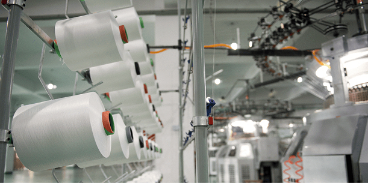
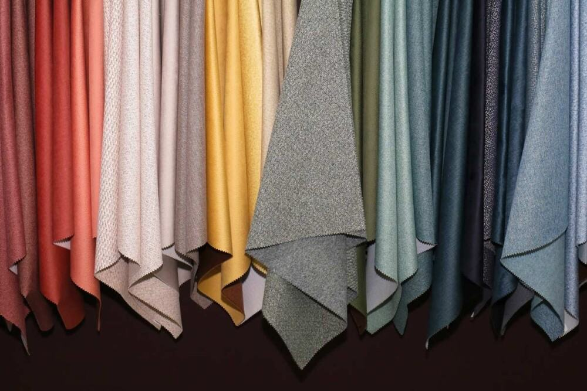
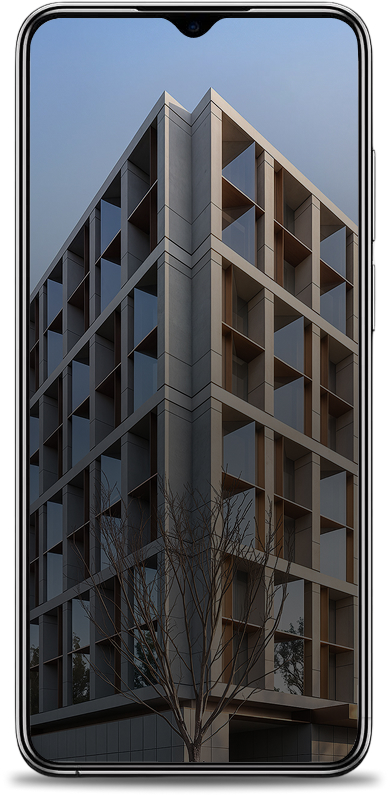

Grid
Electricity
14.94 GWh
Electricity Consumption
A unified approach to making product-level sustainability
information
transparent, accessible and decision-ready
connecting environmental performance,
manufacturing
data and responsible sourcing.


 DPP-0001
DPP-0001Scan the care label on your garment to open this passport. Sample code shown.
| Product Name: |
No products found. |
|---|---|
| Product ID: | DPP-0001 |
| Color: | Burgundy |
| Fabric Styles: | College In Certain Styles Only |
| Fabric Weight: | 280 gsm |
| Passport Status: | Verified & Active |
Five core environmental indicators form an initial foundation for consistent
sustainability
reporting and executive visibility.
Electricity Consumption
Solar / Renewable Output
Water Usage
MMBtu Consumption
tCO₂e · Indicator to Validate

The journey starts in the field. Organic cotton is grown without synthetic pesticides and picked by a farm cooperative.
Organic cotton
Aegean, Türkiye
Farm Certificate
What the garment is made from, by component. We only
show a fibre claim once there is
evidence behind it.
| Body Fabric | Organic cotton single jersey, 180 g/m² | Verified |
|---|---|---|
| Collar Rib | Organic cotton rib | Declared by supplier |
| Sewing Thread | Cotton | Declared by supplier |
| Recycled Content | 0% recycled fibre | Verified |

Where each stage happened and who was responsible for it.
| Raw Material | Farm cooperative · Aegean region, Türkiye | Verified |
|---|---|---|
| Fabric | The cotton is spun into yarn, knitted into jersey and finished at one mill. | Declared by supplier |
| Manufacturing | Cut and sew · Portugal | Declared by supplier |
| Responsible Business | LOGO NAME · [registered address] | Verified |
A few habits that help your tee last
years longer.
Machine wash at 30°C with similar colours.

Please don’t tumble dry. It shrinks cotton.
Machine wash at 30°C with similar colours.
Hand or machine wash gently.
Inside out, one dot setting.
A phased foundation for digital compliance readiness, transparency and scalable
sustainability
data management.

Make reliable product information easier to govern internally, share with partners and present confidently to stakeholders. Suggested next step: validate baseline metrics, select pilot styles and confirm data owners.